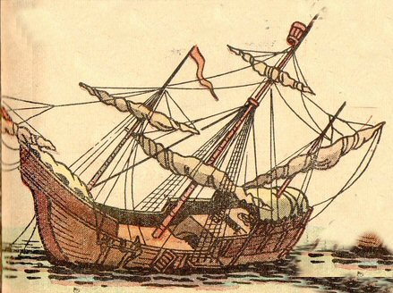

Wednesday, April the 30th, 2008
back to: title, date or indexes

“Ah, but look! The stricken ship has been abandoned by its crew. Their puddings had been over-egged and they all fell into the sea. And they were swallowed up each one, and fed the monsters of the deep. Now not a trace of them remains, except bones strewn on the ocean floor, and their stricken ship above, pecked at by indifferent auks.”
From The Contaminated Eggy Pudding Eaten By Incautious Sailors And Other Maritime Tragedies by Dennis Beerpint